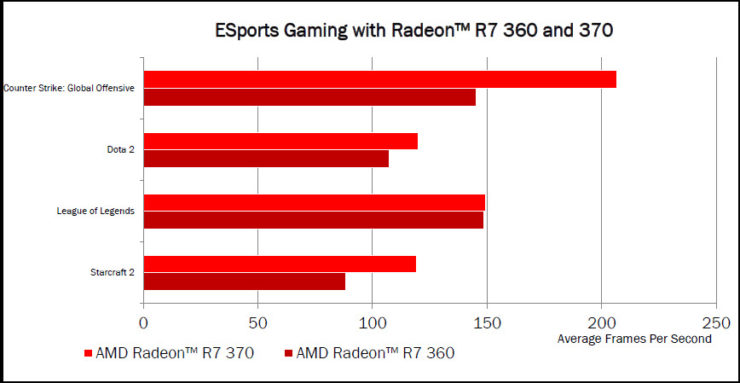

AMD’s high-end cards are lavished with the new, barnstorming Fiji core, but lower-end cards such as the R7 370 aren’t quite so fortunate.
Instead, the underlying GPU in the R7 370 is named Trinidad, which is actually a version of the Pitcairn core that debuted way back in 2012 as the Radeon HD 7850.
The R7 370 is one of the cheapest non-OEM cards from AMD’s current slate of products. The red team has put together the R7 370 by applying a simple clock tweak to Pitcairn. The R7 370’s 975MHz core adds 75MHz to the R7 265’s original speed. The only other tweak concerns memory. AMD is producing 2GB and 4GB versions of the R7 370, which it didn’t do last year – the R7 265 was available only with the lesser amount. Elsewhere, the card is still made with 2.8 billion transistors and 1,024 stream processors, and that memory is still accessed with a 256-bit bus. Little has changed architecturally, but AMD has added features to the updated Pitcairn core. There’s support for Vulkan as well as the older Mantle API, and the company also adds compatibility with its power-saving frame limiter, LiquidVR and TrueAudio.
XFX Radeon R7 370 - Core Edition - graphics card - Radeon R7 370 - 2 GB - black Specs Interface Type. PCI Express 3.0 x16. Max Resolution. 4096 x 2160. Max Monitors Supported. Interfaces. DVI-D (dual link) Graphics Engine. AMD Radeon R7 370. Max Monitors Supported. Bus Type. PCI Express 3.0 x16. API Supported.
Performance ratings are given below

If you wants buy AMD R7 370 then it is available on the links given below;